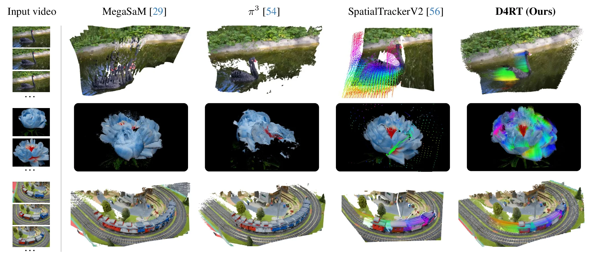

Efficiently Reconstructing Dynamic Scenes One D4RT at a Time
D4RT is a feed-forward transformer that encodes a video once, then answers lightweight point queries to recover depth, point tracks, point clouds and camera parameters, unifying several 4D reconstruction tasks in one model.
Overview
Imagine filming a street with a phone. D4RT is a program that watches the clip once and can then answer questions about it: how far away is this pixel, where does that bicycle go in the next seconds, and where was the camera. It uses one model for all of these questions instead of a separate tool for each, and it answers quickly.
D4RT (Dynamic 4D Reconstruction and Tracking), from Google DeepMind, UCL and Oxford, recovers the 3D geometry and motion of a dynamic scene from a single video [1]. Its objective is to replace separate depth, tracking and camera-estimation systems with one model. The main contributions are a query interface that asks for the 3D position of any pixel at any time, a lightweight decoder that answers each query independently, and strong results on depth, point-cloud, pose and tracking benchmarks together with much higher tracking throughput [1]. CVPR 2026 lists it among its Best Papers [4].
D4RT (Dynamic 4D Reconstruction and Tracking) is an encoder-decoder transformer in the lineage of the Scene Representation Transformer. The encoder maps a video V of T frames to a global scene representation F with N tokens. The decoder cross-attends from a query q into F and returns a 3D point, P = D(q, F). Depth, tracks, point clouds, extrinsics and intrinsics are all different ways of choosing the set of queries. The paper stresses three properties: time indices need not coincide, every query is decoded independently, and one interface serves all tasks [1].
Research Problem
Older systems solve one piece at a time: one for depth, one for tracking, one for the camera. They are slow, and they struggle when objects in the scene move, because they were built for a still world. The question is whether one fast model can do all of it.
Understanding a dynamic scene means answering linked questions: how far is each pixel, where does each point move, and where was the camera. Earlier systems address them separately. MegaSaM combines several off-the-shelf models and needs test-time optimisation, VGGT uses separate decoders per output and cannot establish correspondences for dynamic parts, and SpatialTrackerV2 relies on costly iterative refinement and tracks points from one frame only [1]. Tracking every pixel through a video is also expensive. The research gap is a single, fast model that handles reconstruction and tracking together, which matters for any system that must understand moving scenes.
The task is joint 4D reconstruction and tracking from monocular video. Pure reconstruction models (MegaSaM, pi3) accumulate point clouds and fail on motion, for example repeating the swan in Figure 4 or missing the flower. Tracking-based models capture dynamics but leave gaps wherever content is occluded in the first frame. Several feed-forward models also do not support intrinsics that change within a video or use only the first frame as reference.
Cost is the second obstacle. Tracking every pixel to every frame naively needs on the order of T squared times H times W queries, and the paper says dense frame-level decoders are stuck with that, while models with heavy sparse decoders pay a large per-query cost. The design goal is therefore a formulation where cost is controlled by how many points are queried, with no task-specific heads.
Key Idea
Think of reading a book once and then answering any question about it. D4RT reads the video once. Then you can point at any spot in any frame and ask where it is in 3D at any other moment. Each question is answered on its own, so you only pay for the questions you ask.
D4RT encodes the video once and then answers point queries. A query has a pixel position (u, v) in a source frame plus three time indices: the source frame, the target frame where the 3D position is wanted, and the camera frame in which the answer is expressed. The decoder returns one 3D point (Figure 1) [1].
Changing which indices are fixed gives different tasks. Fix a pixel and let the target time run over the video: a 3D track. Query every pixel with the three times equal and keep Z: a depth map. Use one shared camera time: a point cloud in one coordinate system. Since each query is independent, cost grows with the number of points requested.
The query is q = (u, v, t_src, t_tgt, t_cam), with (u, v) in [0,1]^2 and the times in 1..T. Relative pose between frames i and j: decode an (h, w) grid of source points with t_src = t_tgt = i, once with t_cam = i and once with t_cam = j; the two point sets describe the same 3D points in two camera frames, and a rigid transform between them comes from Umeyama's closed-form 3 by 3 SVD solution. Intrinsics: with the principal point fixed at (0.5, 0.5), f_x = p_z (u - 0.5) / p_x and f_y = p_z (v - 0.5) / p_y per decoded point, then a median. Distorted cameras would need an extra non-linear refinement.
Dense tracking (Algorithm 1) marks the pixels that decoded tracks already pass through and samples only unvisited ones; the paper reports an adaptive 5 to 15 times speed-up over the naive query count [1].

Methodology
A video, plus spatio-temporal point queries (a pixel position and three time indices).
A video encoder builds a global scene representation; a query decoder reads it.
Direct: one 3D point per query.
Derived from those points: depth maps, point tracks, point clouds, camera pose and intrinsics.

A large neural network, the encoder, processes the whole video once and stores what it learns as a compact scene representation. A small network, the decoder, then takes a query, such as where a given pixel is in 3D at another moment, consults that representation and returns a 3D point (Figure 2).
Both parts are trained together on videos with known 3D information, synthetic and real. The training objective is to reduce the distance between the predicted 3D points and the true ones.
As Figure 2 shows, a Vision Transformer encoder (ViT-g, about 1 billion parameters) with interleaved frame-wise and global self-attention processes the entire video once and outputs a global scene representation. A small cross-attention decoder (8 layers, 144 million parameters) takes a query, cross-attends to this representation and returns its 3D position. Queries attend to the representation but not to each other, so each is decoded independently [1].
Each query combines an embedding of (u, v), learned embeddings of the three time indices and a small 9 by 9 RGB patch around the pixel, which gives the decoder local appearance cues for correspondence and sharper object boundaries [1]. The training objective is an L1 loss between predicted and ground-truth 3D positions, weighted by the predicted confidence, with small auxiliary terms; training used 48-frame clips at 256 by 256 [1].
The encoder is a Vision Transformer with interleaved frame-wise and global self-attention (ViT-g: 40 layers, about 1 billion parameters) and gives F in R^(N x C). The 8-layer, 144-million-parameter decoder cross-attends from a query into F and returns P = D(q, F), the data flow of Figure 2 [1]. Appendix D compares random initialisation with pretrained VideoMAE weights for the encoder: Sintel AbsRel (scale-only) is 0.738 versus 0.302 and ATE 0.334 versus 0.091 (Table 11).
Query. q = (u, v, t_src, t_tgt, t_cam), with Fourier-embedded (u, v), learned time embeddings and a 9 by 9 RGB patch around the pixel; Figure 2 shows how choices of the three times yield each task. The patch helps the query find reliable correspondences with the encoded features and supplies low-level cues for sharp object boundaries, in the authors' account (Section 4.4 of [1]).
The total loss averages over sampled queries: the confidence-weighted 3D L1 term (weight 1.0) minus a log-confidence penalty (weight 0.2), plus 2D position L1 (0.1), visibility binary cross-entropy (0.1), displacement L1 (0.1) and normal cosine similarity (0.5) [1]. The appendix equation lists the confidence weight twice, which looks like a notation duplicate. All terms apply only where ground truth exists.
Experiments & Results
D4RT is trained on a mixture of public datasets (for example PointOdyssey, Kubric, ScanNet and Waymo Open) plus internal data [1]. It is evaluated on 3D tracking (TAPVid-3D), video depth and point clouds (Sintel, ScanNet, KITTI, Bonn) and camera pose (Sintel, ScanNet), with metrics such as AJ, AbsRel, ATE and RPE. Speed is measured as the number of full-video 3D tracks one A100 GPU can produce at a target frame rate [1].

In the paper's speed test, the model follows tens of thousands of points through a video where the other two methods manage a few thousand (at a 1 FPS target, Table 3). Accuracy is measured separately, and the model is not the best on every test.
- Table 3 measures speed, not accuracy: the maximum number of full-video 3D tracks each method can produce on one A100 GPU while holding a target frame rate [1]. At 1 FPS, D4RT supports 40,180 tracks versus 5,770 for DELTA and 2,290 for SpatialTrackerV2.
- Accuracy is reported separately, in the paper's depth, point-cloud, pose and tracking tables, where D4RT leads on most but not all benchmarks (for example, π³ is better on Bonn depth) [1].
- The speed comparison covers two baselines and one GPU type, so it does not show superiority on other hardware or tasks [1].
- Table 3 measures speed, not accuracy: the maximum number of full-video 3D tracks each method can produce on one A100 GPU while holding a target frame rate [1]. At 1 FPS, D4RT supports 40,180 tracks versus 5,770 for DELTA and 2,290 for SpatialTrackerV2.
- Accuracy is reported separately, in the paper's depth, point-cloud, pose and tracking tables, where D4RT leads on most but not all benchmarks (for example, π³ is better on Bonn depth) [1].
- The speed comparison covers two baselines and one GPU type, so it does not show superiority on other hardware or tasks [1].
Throughput counts full-video tracks, each made of T independent decoder queries. The caption and the DeepMind blog post [3] state D4RT is 18 to 300 times faster, but dividing the cells gives roughly 7 to 314 times, so the range does not cover every cell. The ablation to remember: removing the local RGB patch worsens Sintel AbsRel (scale-only) from 0.302 to 0.366 and ATE from 0.091 to 0.173 (Table 7) [1].

In Figure 4, MegaSaM repeats the moving swan and π³ misses the flower, while SpatialTrackerV2, which tracks points from one frame only, leaves gaps in the reconstruction. According to the authors, D4RT is the only method shown that recovers a full 4D representation of the scene [1]. This is an illustrative comparison, not a quantitative measure.
Limitations
The paper has no limitations section. The authors note some simplifications, and their long-video results are shown only as pictures, not measured.
- Author-stated: the paper has no dedicated limitations section. Its long-video experiment is qualitative and deliberately omits loop detection and global optimisation, so long-range drift is not quantified [1].
- Author-stated assumptions: the principal point is fixed at the image centre, and lens distortion would need a separate non-linear refinement [1].
- Inferred, not stated by the authors: the ablations use a smaller ViT-L model and only Sintel, so they may not transfer to the full model; and because no code is linked by the paper or project page (checked 9 November 2026) [1][2], independent replication is currently harder.
- Author-supported: long-video results are qualitative with loop detection and global optimisation removed on purpose; the principal point is assumed at the image centre; pinhole intrinsics are derived from decoded points and lens distortion would need a non-linear refinement [1].
- Inferred, not stated: pose and intrinsics are derived from point predictions, so point errors propagate into them, and training at 256 by 256 is consistent with the appendix study of high-resolution patches. Ablations use a smaller ViT-L and only Sintel, so they may not transfer to ViT-g.
- Reproducibility (our inference): 64 TPU chips, unlisted internal data and no linked code release (checked on 9 November 2026) [1][2].
Applications & Key Takeaways
Demonstrated in the paper: depth, point tracks, point clouds, camera pose and intrinsics from a single model, evaluated on public benchmarks and shown qualitatively on dynamic scenes [1]. Potential downstream uses, not evaluated in the paper: robotics, augmented reality, spatial computing and video editing.
One model answers different questions about a video by predicting 3D points only where you ask. Depth, motion and camera position all come from the same kind of question, which is why it can be fast.
- Central idea: encode the video once, then decode independent point queries into 3D positions.
- Unified capability: depth, tracks, point clouds and camera parameters come from one interface instead of separate task-specific heads.
- Practical significance: cost scales with the number of queries, which makes dense tracking and pose estimation more efficient; gains should be read benchmark by benchmark [1].
- Design lesson: separate one-time scene encoding from cheap, independent per-point decoding.
- Ablation lessons: patch embedding, VideoMAE initialisation and per-loss terms each show clear effects on Sintel, with trade-offs between depth and pose.
- Derived quantities (pose via Umeyama, focal via median) are tied to point accuracy.
References
- Efficiently Reconstructing Dynamic Scenes One D4RT at a TimeConference paper, CVPR 2026 (arXiv:2512.08924)
- D4RT project pageProject website
- D4RT: Unified, Fast 4D Scene Reconstruction & TrackingBlog post, Google DeepMind (22 Jan 2026)
- CVPR 2026 Best PapersAward announcement, CVPR 2026
The figures and Table 3 are reproduced from the original paper [1] for illustration; copyright remains with the authors (arXiv non-exclusive license). Reuse permission has not been confirmed.